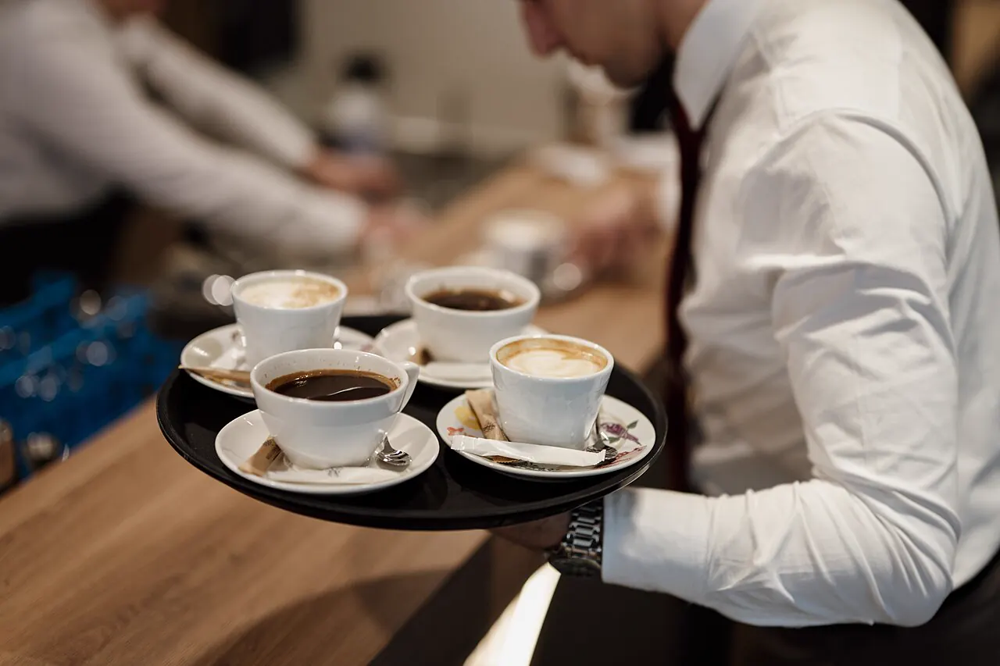

Будни с 8:00, выходные с 9:00
Coffeepie: кофе и пироги на Наличной
Кофе с собой по дороге к метро и пироги, которые можно заказать целиком к празднику.
Адрес и часы работы
Наличная улица. Заходите выпить на месте или возьмите с собой.
- Пн–Пт
- 8:00–21:00
- Сб–Вс
- 9:00–21:00
- Где
- Наличная улица

Пирог целиком — за сутки до праздника.
Напишите, какой пирог и к какому часу, — испечём и упакуем.


Предзаказ без очереди
Утром каждая минута на счету — закажите заранее.
Напишите заказ
В WhatsApp: что и к какому времени.
Мы подтвердим
Ответим за пару минут и скажем, когда будет готово.
Заберите без очереди
Назовите имя на кассе — заказ уже ждёт.